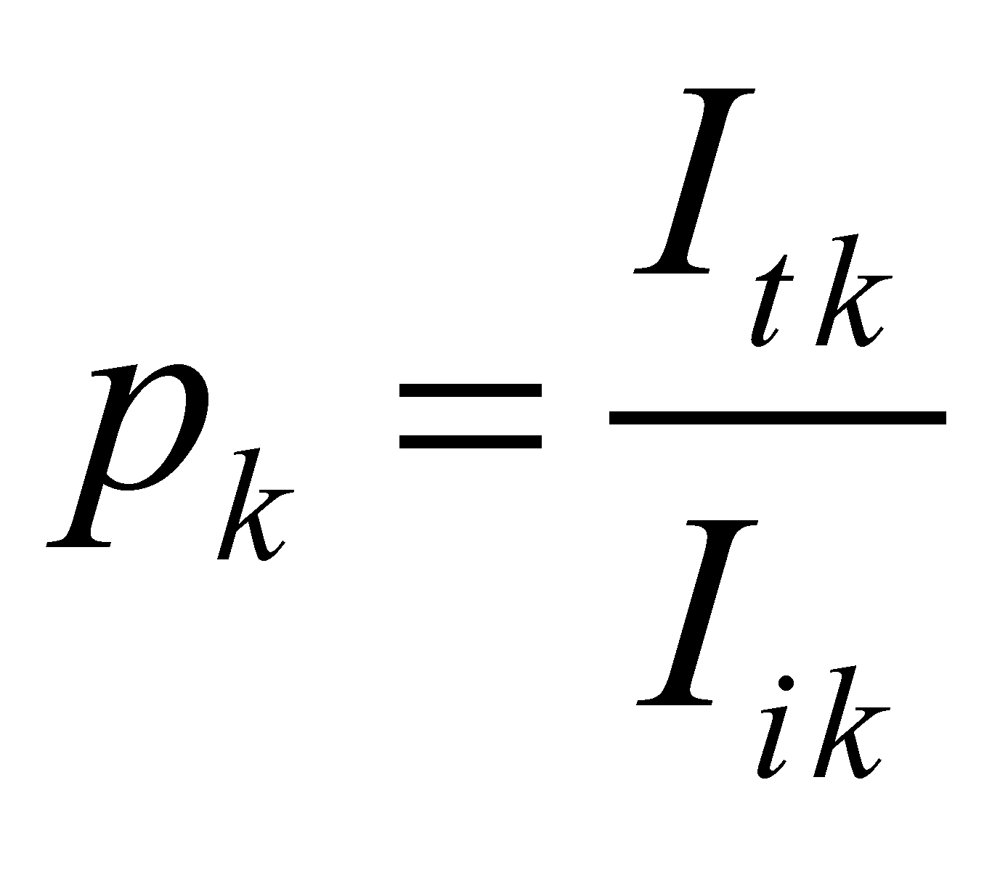
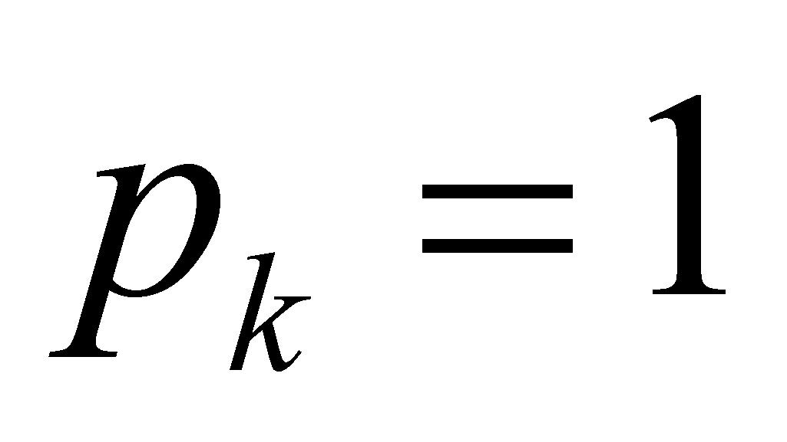

|
|
|
The first material systems where we first met the “bounding surface” term were the distributed systems, which were briefly approached in the previous chapter. If they have a permanent interaction (such as the S or L-type ones), these types of material systems have also their own volume and a surface which confines this volume, and due to this reason, it is called bounding surface. All the exchanges between the outer and inner systems take place through this surface. These exchanges are defined by the transfer through the bounding surface of some distributed amounts, process which it is called flux, as we have previously mentioned. Therefore, fluxes (displacement or propagation type) may cross through the bounding surface, both inward and outward of the volume confined by it. The fluxes oriented inward of the surface shall lead to accumulations into the confined volume of the amount carried by these fluxes (which are therefore positive quantities or stock increment), whereas the outward-oriented fluxes shall lead to a stock decrement of those amounts.
Due to this reason, the fluxes whose FDV are oriented inward of the bounding surface shall be considered as positive. The bounding surface of a body is not a theoretical surface (computing, imaginary, abstract), similar with the surfaces from mathematics or from the theoretical physics. Not all the incident fluxes are able to run freely through a surface like this; some of them shall cross only partly, some, not at all (they shall be totally repulsed, reflected). By considering Iik as the intensity of an incident k-type flux on the bounding surface (intensity given by the relation 5.2.1.4), and Itk which is the intensity of the same type of flux which has succeeded to cross it (flux transmitted through the bounding surface).
Definition 7.2.1.1: The transmittance (permeability, transparency) of the bounding surface for k-type fluxes is considered to be the following amount:
 (7.2.1.1)
where index k is a running number from a list of all the fluxes which are incident along the surface, selected according to the transported amount (energy, information, structure objects etc.) or according to other distinctive properties of them. It is obvious that there is a different transparency of a certain bounding surface related to the various fluxes which cross it, but it ranges within the same interval, between 0 and 1.
The numerical value of the bounding surfaces transmittance allows their classification in two major groups:
Real surfaces, with pk < 1 for the real fluxes;
Abstract surfaces (theoretical, computing ones, which are existent only for IPS as abstract models of the real surfaces), for which, for any type of flux (total permeability), because these surfaces do not physically exist.
Few remarks seem to be necessary:
According to the objectual philosophy, the only real surfaces are the bounding surfaces of MS, which shall be called real bounding surfaces (RBS);
As for the real surfaces, the transmitted flux shall be always lesser than the incident flux.
Copyright © 2006-2011 Aurel Rusu. All rights reserved.